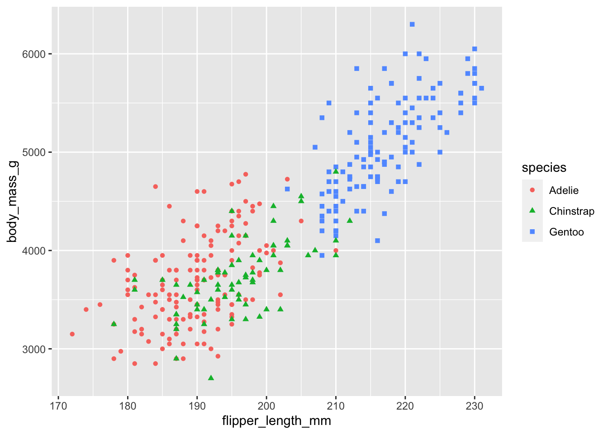
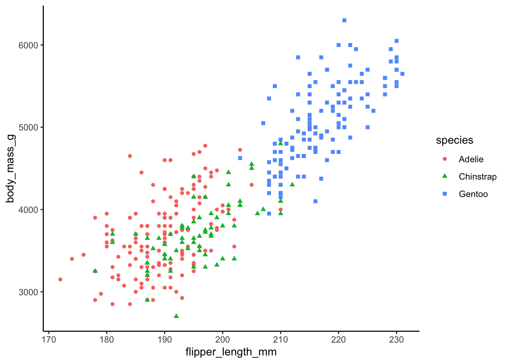
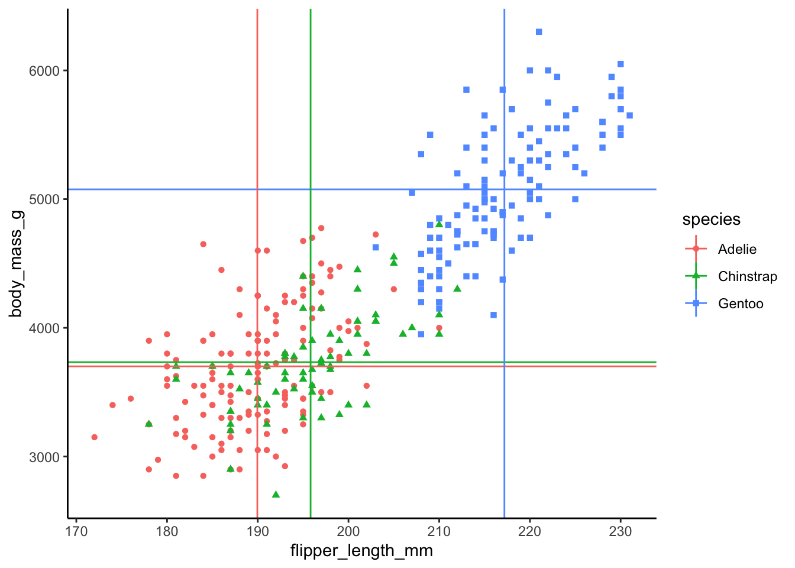

1 + 2
3 * 9Class 2: Importing, Merging, and Restructuring Data
Whenever you need to work with data in R, the first step is to import the data. This step requires knowing something about where the data file is stored on your computer, what format the data file is saved in, what kind of data it contains, and more. It can be more complicated than it seems. There are also big no-no’s for importing data when it comes to writing reproducible scripts that are used way too often. In this class, you will learn all this about importing data in addition to how to merge multiple sets of data and how to restructure the way the data is formatted.
This course does not require that you already have experience with R, but it would greatly benefit you to have at least a basic understanding of how R works. In this first class we will only cover the bare bones that will be needed to get you started. For a more complete intro to the basics of R see the page on R Basics.
As you go through the classes in this course, I encourage you to experiment. If you are curious what happens if you write the code slightly differently, go ahead and try it out. See what happens. If it is not what you expected spend some time figuring out why.
New Script File
To create a new R script go to
File -> New File -> R Script
This should have opened a blank Script window called Untitled.
The Script window is a file where you are saving your code. This is where you will write, edit, delete, and re-write your code.
This course will refer to two types of R script files:
Reproducible script file: Script file for actually processing and analyzing your data. Can reproduce your steps of processing and analysis.
- The purpose of the Reproducible script file is to create a document, that can be saved on your computer and shared with others. It should only include code that is necessary to process your data. Therefore, you only want to type in code in the R script file that you intend to save and is necessary for processing your data.
Scratchpad script file: A script file for testing, debugging, and exploring your data.
- Often saved as Untitled.R or not saved at all
- The purpose of the scratchpad script file is to write R code that is not intended to be saved and is not a necessary step for processing your data. For instance, you might want to view a data frame (more on that later), check what are the unique values in a column, get the names of all the columns in a data frame. These will help you to write your R code, but are not necessary steps for actually processing your data once you have the R code written. Therefore, you can just write the code directly in the R Console window and execute the code there - that way it won’t clutter up your Reproducible script file.
Tip
Create two script files for this class.
One will be a reproducible script file you can save at the end of the class to reproduce same data processing, visualization, and statistics we will do at the end.
The other will be a scratchpad script file. You can choose whether you want to save that script or not.
Running R Code
Throughout this course you will be introduced to several ways of executing or “running” R code. For now, you need to be aware of two ways of doing so.
- Typing code in an R script file and executing R code line-by-line
Ctrl + Enter - Typing code directly in the console window
To execute R code in an R script file line-by-line you just need to type in some R code, put the cursor anywhere on that line, and hit Ctrl + Enter.
In a scratchpad script file, run each line one-by-one.
Notice how the lines of code and their output were printed to the Console window. No matter how you execute R code it gets passed to the Console window anyways.
Type the same lines of code as above but this time directly in the Console window, one at a time, and hit enter.
Creating R Objects
In R, you will create what are called objects that store some information. That could be a single value like 5, an entire table of data with rows and columns, and even more complex objects. Objects are created using the assignment operator, <-.
Everything on the left hand side of the assignment operator <- is an object. Everything on the right hand side of <- are functions or values. Go ahead and execute the following lines of code.
my_first_object <- "hello"
my_first_object[1] "hello"my_second_object <- c(5,6,7,8)
my_second_object[1] 5 6 7 8You just assigned the value "hello" to an object named my_first_object. Note that R is case sensitive, my_first_object would be considered a different object as my_First_object.
You also created my_second_object that stores a vector of four values: 5, 6, 7, and 8. The c() function can be used to create a vector of values.
Using Functions
Anything you do in R is by using functions. In fact, learning R is just learning what functions are available and how to use them.
Functions start with the name of the function followed by parentheses function_name(). Inside the () is where you specify certain arguments separated by commas , . Some arguments are optional and some are required for the function to work.
For example, there is a function to create a sequence of numbers, seq().
seq(1, 100, by = 10) [1] 1 11 21 31 41 51 61 71 81 91In the seq() function above we specified three arguments, separated by commas. The first two arguments were set without specifying the argument name, however the third argument we used the argument name by to define seq(by = 10). If you don’t explicitly use the argument name it will implicitly assume an argument based on the order it is entered, depending on how the author created the function.
Helper Function
A handy tip is to frequently make use of the helper function, ?. Type ?seq into the R console. Helper documentation will be provided for that function and as you can see, the first argument defined is from and the second argument is to.
The order of arguments only matters if you do not specify argument names
Specifying the actual argument names, the above code is identical to the three following examples:
seq(from = 1, to = 100, by = 10)
seq(to = 100, by = 10, from = 1)
seq(1, 100, 10)There are also default values that arguments take, which means if you don’t define an argument it will take on the default value. The helper documentation shows that the from argument has a default of from = 1, therefore we could even leave out the from = argument because we were using the default value.
seq(to = 100, by = 10)What this means is that it can be important to know what the default values are for functions you are using and you can figure that out with the helper function ?
R Packages
The community of R users have developed a vast number of functions that expand on the functions that come with R. Many of the functions developed by R users allow you to do more complicated things with your data without having to be an advanced R programmer. And the great thing is that as more psychology researchers use R, the more functions there are specifically for psychological research.
Functions that R users develop are collected in what are called packages. Most R packages are hosted on The Comprehensive R Archive Network - CRAN. Some other packages, ones that are in more developmental stages and may not be as stable, are hosted on GitHub.
Install and Load Packages
To install packages from CRAN is easy. Simply type into the console window: install.packages("packagename")
For example:
install.packages("dplyr")Once you have a package installed, you can load that package into your current environment. Your R Environment consists of things such as objects (variables) you have created, data you have imported, and functions you have loaded. Your R Environment are like the tools and objects you have available to you and are working with.
When you load a package you are bringing the functions from that package into your environment so you can start using them. To load a package is easy: library(package_name)
For example:
library(dplyr)Data Frames
The main type of R object that you will be working with are data frames. You are probably already familiar with data frames. Excel uses this type of data structure, it is just rows and columns of data.
Many R packages come loaded with data sets. Let’s take a look at a fun data set from the palmerpenguins package, do some simple transformations of the data, visualize, and do a simple statistical analysis.

First, install the package
install.packages("palmerpenguins")The install function should just be typed into the Console because this is a step that you only need to perform once. Go ahead and install dplyr and ggplot2 packages as well.
The library() function to load packages, however, is a necessary step for processing the data, therefore, it needs to be included in the reproducible script file.
Load palmerpenguins , dplyr , and ggplot2 packages. We will use dplyr to do some simple transformation of the data and ggplot2 to visualize the data.
# load packages
library(palmerpenguins)
library(dplyr)
Attaching package: 'dplyr'The following objects are masked from 'package:stats':
filter, lagThe following objects are masked from 'package:base':
intersect, setdiff, setequal, unionlibrary(ggplot2)When you load palmerpenguins there is a data frame now available in your environment called penguins. However, it is not explicitly listed in your environment because it can from a package and not something you created. This is not required, but for the sake of being able to see the data frame in the Environment window, let’s assign the penguins data frame to a new data frame called data_import.
data_import <- penguins
Note
I prefer to name data frames that I import with “import” that way it is clear which data frame is the original one. Then I create new data frames (R objects) with a different name. This allows me to easily identify and go back to the original data after I have done some transformations on it.
Viewing the Data
Let’s first get to know this data, how it is structured, and what kind of values it stores. You can view a data frame by selecting it in the Environment window or by using the View() function.
View(data_import)
Note
Do you think View() should be included in the R script or just typed directly into the Console?
By viewing the data we can see that there are columns that contain information such as the species of the penguin, the island it belongs to, some size dimensions, and more.
Note
Notice how the column names are simple but also convey useful information for someone to easily understand this data. For instance, the the column bill_length_mm is not only straightforward but conveys the unit of measurement. It is not always possible to create both concise and information rich column names like these. When that is the case you can go on the side of being concise while providing documentation elsewhere that provides more detail.
This principle of easy to understand is important and something we will keep coming back to.
This data frame has a small number of columns so they are all easy to see. However, some data sets you work with will have a lot more columns that are difficult to view on a single page. In those cases, it can be useful to get a list of the column names printed to the Console. This can be done using the colnames() function.
colnames(data_import)Doing so also allows you to copy and paste the column names from the console into your R script. This is a good strategy to avoid typos that can cause you headaches when writing R code.
It is important to understand what are the values and types of values stored in each column of your data. To get an initial peak at the data, you can use the head() function.
head(data_import)You can only see the first 10 rows, but you can already see some useful information. For instance, the type of values are noted in gray below the column names between < >. We will discuss these in more detail soon, but notice that the column year is of type <int> meaning integer. Integers are simple numbers with no decimal places.
You may also notice that some columns contain NA values. These are missing values and are important to know if you have any in your data.
To get more information as to the values in each column you can use the unique() function along with a $ notation. $ is a notation to reference a certain column in a data frame. For example, to reference the species column in data_import you would specify data_import$species. unique() will get the unique set of values in a column of data. This is useful to evaluate what values are contained in a column.
unique(data_import$species)It looks like there are three unique values in the species column, Adelie, Gentoo, and Chinstrap. The species column is a type or class of values that are known as factors, again more on this in a bit. You could see this when we used head() with the notation <fct> meaning factor. But you can also see this because unique() also displayed the levels of the factor. Levels mean that there is a specified order to the values.
Note
What are the unique values in the year column? Does this column seem like it is a factor? What about sex?
Types of Values
Classes are types of values that exist in R. Here are a list of some common value types:
character (or non-numeric)
"hello","goodbye"double (or numeric)
2,32.55integer
5,99logical
TRUE,FALSE
To evaluate the type of values in a column you can use typeof()
typeof(data_import$bill_depth_mm)
typeof(data_import$flipper_length_mm)To change the class of values in an object you can use as.character() , as.numeric() , as.double() , as.integer() , as.logical() functions.
as.character(data_import$bill_depth_mm)Factors
Notice that if you evaluate the type of values in species you get an “integer”. This is probably surprising to you because 1) They look like character values (non-numeric), and 2) I told you earlier that the species column is a factor. Factors are a special type of column, that represent levels of a category with an order to those levels. The actual values in Factors can be of type character, double, integer, or logical. However, they are represented as integers corresponding to the order of the levels. Factors become especially important in data visualization and statistical analysis.
You can set a column of values as a factor by using factor()
factor(data_import$year, levels = c(2007, 2008, 2009))
Note
Note that this line of code does not actually change the values in data_import (neither did the as.character(data_import$bill_depth_mm) line of code above). Don’t believe me? Run unique(data_import$year) or head(data_import).
Why do you think this is the case?
It is because we did not use the assignment operator. We simply printed the result of this function to the Console. In order to actually change the values in a data frame you need to assign <- the result of the function factor() to a column in the data frame. In this case, to the values in the column species in the data_import object, data_import$species.
Note
How did I know how to use the argument name levels = in factor()? You can learn about arguments a function can take, and what they do using the helper function ?. For instance type ?factor() in the console. In the Help window, you can see there are a number of arguments that can be specified in factor(). For levels, it states that it is an optional vector of the unique values that x might have taken. This tells us we need to supply a vector of unique values. You can use the c() function to create a vector of values. Type c(2007, 2008, 2009) in the Console. You can see there are three elements in the vector for each year. We specify this vector in the levels argument to tell factor() that these are the unique values in the data_import$year column.
Transforming Data
Just for the fun of it, let’s do a simple transformation on the data, visualize a relationship between three variables, and statistically test a relationship between two variables. Three variables that we will look at are species, flipper_length_mm , and body_mass_g.
First, let’s compute the mean flipper length and body mass for each species of penguin and store them in columns in the data frame. Because we are now changing the original data frame, let’s go ahead and call it something different. Because this is the data frame we will eventually plot, why not call it data_plot
data_plot <- data_import |>
mutate(.by = species,
flipper_length_mm.mean = mean(flipper_length_mm, na.rm = TRUE),
body_mass_g.mean = mean(body_mass_g, na.rm = TRUE))mutate() comes from the dplyr package and allows you to modify the values in existing columns or create new columns. We will learn more about this function and other functions in dplyr in the next class. But without even knowing much about it you can reasonably guess that we are creating new columns containing the mean of our two variables of interest. Further, we are calculating the mean separately by species. You can view the data frame and see that each species has a different mean value.
What about that first line of code? The |> notation at the end of the line says pass data_import into the mutate() function. This is how mutate() knows where these columns species, flipper_length_mm , and body_mass_g come from. Then the result of mutate() is assigned to a new object, data_plot.
Go ahead and view data_plot. You can see that it is the same as data_import except it has two new columns, flipper_length_mm.mean and body_mass_g.mean.
Visualizing Data
We will use the ggplot2 package to visualize the relationship between species, flipper_length_mm , and body_mass_g. Let’s do this step-by-step. First let’s build the data and aesthetic layers. These layers tell ggplot() what data to plot and how we map them onto the scales (e.g., x-axis and y-axis) of the graphic.
ggplot(data_plot, aes(x = flipper_length_mm, y = body_mass_g,
color = species, shape = species))
Note that this only creates the overall structure of the graphic, no data is plotted yet. That is because there are a lot of different ways to visualize the data and we need to specify these visual elements in the geometries or geom layer.
ggplot(data_plot, aes(x = flipper_length_mm, y = body_mass_g,
color = species, shape = species)) +
geom_point()Warning: Removed 2 rows containing missing values (`geom_point()`).
Note how it mapped species onto the color and shape of the data points.
Let’s make the plot a littler prettier by using a customized theme, theme_classic()
ggplot(data_plot, aes(x = flipper_length_mm, y = body_mass_g,
color = species, shape = species)) +
geom_point() +
theme_classic()Warning: Removed 2 rows containing missing values (`geom_point()`).
Optional: We can also add horizontal and vertical lines corresponding to the mean for each species that we calculated earlier.
ggplot(data_plot, aes(x = flipper_length_mm, y = body_mass_g,
color = species, shape = species)) +
geom_point() +
geom_hline(aes(yintercept = body_mass_g.mean, color = species)) +
geom_vline(aes(xintercept = flipper_length_mm.mean, color = species)) +
theme_classic()Warning: Removed 2 rows containing missing values (`geom_point()`).
Statistical Analysis
Based on the graphic visualization, it looks like there is a strong relationship between body mass and flipper length, perhaps unsurprisingly. Let’s calculate the correlation between these two variables and test whether it is statistically significant or not.
cor.test(data_import$body_mass_g, data_import$flipper_length_mm)
Pearson's product-moment correlation
data: data_import$body_mass_g and data_import$flipper_length_mm
t = 32.722, df = 340, p-value < 2.2e-16
alternative hypothesis: true correlation is not equal to 0
95 percent confidence interval:
0.843041 0.894599
sample estimates:
cor
0.8712018 The correlation is r = .87 and is statistically significant, p < .05.
That was easy!
Class 1: Reproducible Script
# load packages
library(palmerpenguins)
library(dplyr)
library(ggplot2)
# import data
data_import <- penguins
# transform data
data_plot <- data_import |>
mutate(.by = species,
flipper_length_mm.mean = mean(flipper_length_mm, na.rm = TRUE),
body_mass_g.mean = mean(body_mass_g, na.rm = TRUE))
# visualize data
ggplot(data_plot, aes(x = flipper_length_mm, y = body_mass_g,
color = species, shape = species)) +
geom_point() +
geom_hline(aes(yintercept = body_mass_g.mean, color = species)) +
geom_vline(aes(xintercept = flipper_length_mm.mean, color = species)) +
theme_classic()
# statistical analysis
cor.test(data_import$body_mass_g, data_import$flipper_length_mm)In the rest of the course, we will go into greater depth on transforming data, graphical visualization, and statistical analysis.